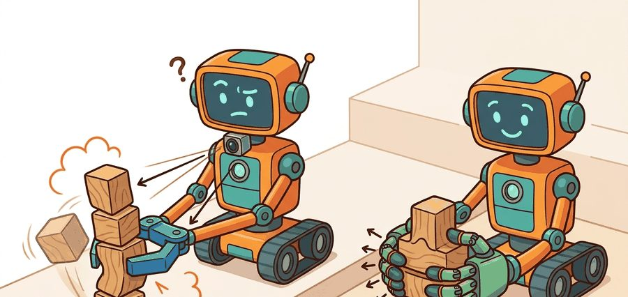
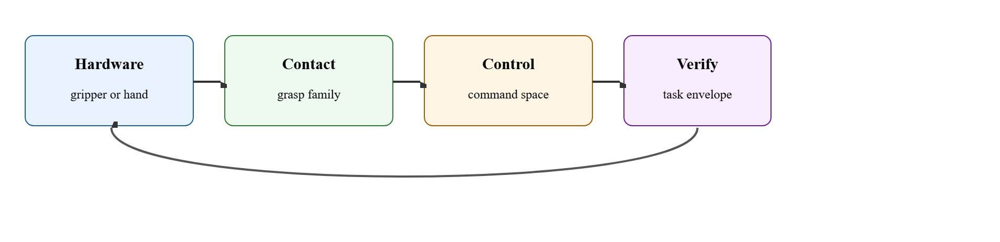
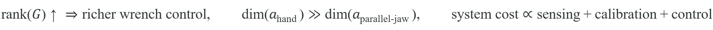

"More fingers buy options, not free competence."
A Whole-Hand Design Review

This section assumes familiarity with grasp quality metrics and the Dex-Net scoring pipeline introduced in section 43.1. The contact-family concepts developed here are extended in section 43.3, which applies them to in-hand reorientation, and the control burden of multi-finger hands motivates the tactile feedback loops covered in section 44.4.
A warehouse robot picks a thousand identical boxes per hour with two flat jaws and never misses. A research hand with four articulated fingers struggles to reliably unscrew a bottle cap. Yet foundation manipulation models trained in 2024 and 2025 are pushing multi-finger hardware into real deployment, making the hardware choice suddenly urgent. The question is no longer which end effector looks more like a hand; it is which one matches your object set, failure budget, and control architecture. Work through this section and you will be able to map any manipulation task onto its minimum viable contact family and quantify the sensing and controller cost you pay when you add fingers.
Hand a two-jaw gripper and a twelve-joint robot hand the same box of parts, and the crude gripper will out-pick the elegant hand by a factor of ten: why does adding fingers so often subtract performance? The answer runs through grasp representation, reachable contact set, force control, in-hand manipulation capacity, and operational reliability, and Figure 43.2.1 traces the loop that organizes the discussion: the hardware you pick fixes the contact family, which fixes the control command space, which is then verified against the task envelope and fed back into the hardware decision.
It clarifies why many production cells still prefer simple grippers while dexterous research platforms invest in richer hands and tactile feedback.
A multi-finger hand increases the space of possible contacts, but it also increases the estimation, calibration, and control burden. Dexterity is purchased with systems complexity.

Parallel-jaw grippers constrain the grasp family, which makes perception and planning cheaper. ("Contact family" and "grasp family" are used interchangeably in this section: both denote the set of distinct contact configurations a hand can form on an object.) Parallel jaws produce only antipodal point-contact pairs, where antipodal means the two contact points sit on opposite sides of the object along a single closing axis, with contact normals pointing toward each other, so the search space collapses to one approach axis and one width parameter. That constraint matters in embodied AI because perception noise and real-time deadlines rule out exhaustive contact search on physical hardware. A small grasp family lets a shallow model find a stable contact in milliseconds. Multi-finger hands expand the contact family to include pinch, wrap, and enveloping contacts, and can support in-hand manipulation. But they raise the dimension of the control and sensing problem, and they force the planner to search a much larger contact space on every cycle.
Think of choosing a kitchen knife versus a full set of chopsticks. A chef's knife has one contact mode: a single blade edge. That constraint makes every cut predictable and fast. Chopsticks offer a richer contact family: pinch, roll, envelop, nudge. But every extra move you can make also requires your fingers to track more variables simultaneously, and a novice drops food precisely because the sensing and coordination burden is higher. Adding fingers to a gripper is the same trade: each new contact mode expands what you can grasp, but also multiplies what the controller must estimate and balance on every cycle.
The right comparison therefore is not human likeness. It is task-envelope before finger count: object diversity, required reorientation, tolerance to uncertainty, and acceptable system complexity. A parallel-jaw gripper with one degree of freedom can exceed 600 picks per hour in structured cells (as reported by Amazon Robotics and comparable industrial deployments as of 2024). A 12-DOF (Degrees of Freedom) dexterous hand running the same pick task often drops below 60. The hardware is not weak; the controller and sensing pipeline must resolve ten times more contact constraints on every cycle. The "smarter" hand performs worse on this task because it explores a richer contact space. Each additional finger adds more state to estimate, more failure modes to recover from, and more solver iterations per grasp attempt, so raw throughput collapses even though the hardware is more capable.
The relationship below summarizes the trade compactly: as the grasp matrix $G$ (the matrix mapping contact forces at each fingertip to the net force and torque applied to the grasped object) gains rank the hand commands a richer wrench space, where a wrench is the combined force-and-torque vector a hand can apply to an object through its contacts, the hand action dimension far exceeds the parallel-jaw action dimension, and total system cost grows with the sensing, calibration, and control burden you take on.

So far: hardware choice fixes the contact family (parallel-jaw versus multi-finger); the task-envelope, not finger count, should drive that choice; and as the grasp matrix $G$ gains rank, the hand commands a richer wrench space at the cost of a larger action dimension and a bigger sensing, calibration, and control bill.
A parallel-jaw gripper has one degree of freedom: jaw aperture. The controller closes the loop on a single force or position signal, and slip detection reduces to a threshold on that signal. A three-finger hand with 12 DOF must estimate contact location, normal force, and tangential friction at each fingertip simultaneously, then resolve a consistent joint torque vector that satisfies all contact constraints without any finger breaking traction. When any one fingertip loses contact, the whole grasp wrench changes, so recovery requires re-solving the contact problem in real time. This is why multi-finger controllers typically run at 1 kHz or faster with dedicated tactile feedback loops, while parallel-jaw controllers often run reliably at 10-50 Hz on standard industrial hardware.
When porting a parallel-jaw controller to a multi-finger hand in Isaac Lab or MuJoCo, the most common silent failure is leaving the policy step frequency at the parallel-jaw default (typically 20 Hz). Multi-finger contact constraint resolution requires a minimum of 500 Hz at the torque level; running the high-level policy at 20 Hz is fine, but the low-level impedance controller (a controller that regulates the effective stiffness and damping between the fingertip and the object, rather than commanding position directly) or torque controller underneath must run at 500 Hz or faster, and the two loops must be decoupled explicitly in the config. In Isaac Lab, set decimation for the high-level policy separately from the physics sim.dt, and verify that sim.dt * decimation matches your intended policy period rather than assuming the defaults carry over from a gripper environment.
The designer picks an end effector whose contact family matches the task envelope, then builds perception, control, and recovery around that choice. The log should make end-effector constraints visible, because many downstream failures are really hardware-design mismatches.
# Choose an end effector from task complexity and reorientation demand.
task = {"object_diversity": 0.8, "reorientation_needed": True, "throughput_priority": 0.4}
score_hand = 0.6 * task["object_diversity"] + 0.8 * float(task["reorientation_needed"])
score_parallel = 0.9 * task["throughput_priority"] + 0.3 * (1.0 - task["object_diversity"])
choice = "multi_finger_hand" if score_hand > score_parallel else "parallel_jaw"
print({"parallel_jaw_score": round(score_parallel, 2), "multi_finger_score": round(score_hand, 2), "choice": choice})Expected output: The expected result chooses the multi-finger hand because reorientation is required and object diversity is high. In a high-throughput structured cell, the same heuristic would often flip back to a simple gripper.
Trace the scoring function with two concrete task profiles. Task A (electronics assembly): object_diversity = 0.8, reorientation_needed = True (1.0), throughput_priority = 0.4. Compute score_hand = 0.6 x 0.8 + 0.8 x 1.0 = 0.48 + 0.80 = 1.28. Compute score_parallel = 0.9 x 0.4 + 0.3 x (1.0 - 0.8) = 0.36 + 0.06 = 0.42. Since 1.28 > 0.42, the choice is multi_finger_hand. Task B (warehouse box picking): object_diversity = 0.1, reorientation_needed = False (0.0), throughput_priority = 0.95. Now score_hand = 0.6 x 0.1 + 0.8 x 0.0 = 0.06 + 0.0 = 0.06, while score_parallel = 0.9 x 0.95 + 0.3 x (1.0 - 0.1) = 0.855 + 0.27 = 1.125. Since 0.06 < 1.125, the choice flips to parallel_jaw. The same three lines of arithmetic separate the two hardware regimes; the deciding terms are the reorientation flag (worth 0.8 to the hand) and throughput_priority (worth up to 0.9 to the jaw).
MoveIt can support both hardware classes at the planning level, but the sensing and control stacks diverge quickly. Parallel-jaw workflows often pair well with Dex-Net style scoring, while multi-finger hands usually demand tactile and contact-rich policy loops.
A common assumption is that a multi-finger hand is strictly superior to a parallel-jaw gripper because it resembles a human hand. That assumption is wrong. Additional fingers expand the contact manifold, but they also expand the sensing, calibration, and control burden. On structured pick-and-place tasks, this burden frequently degrades real-task performance below what a simple two-jaw gripper achieves. Treat finger count as a design variable matched to the task envelope. A parallel-jaw gripper achieves reliable throughput because its constrained contact family keeps perception and recovery tractable. A multi-finger hand only breaks even when the task genuinely requires reorientation, enveloping contacts, or precision pinch that a parallel jaw cannot provide.
Teams often underestimate the software tax of multi-finger hands. The fingers are not just more actuators. They are more contacts, more failure modes, and more state that has to be sensed and controlled.
In warehouse picking, a parallel-jaw gripper often wins on throughput and reliability. In electronics assembly or in-hand tool reorientation, the multi-finger hand may justify its complexity.
Intuitive Surgical's da Vinci system deliberately rejects multi-finger hands in favor of constrained two-jaw EndoWrist instruments (EndoWrist is Intuitive Surgical's wristed instrument line, offering a small number of actuated degrees of freedom at the tool tip rather than a full multi-finger hand), because a surgeon needs predictable, low-DOF contact that maps cleanly to console hand motions rather than the rich-but-unpredictable contact family of a dexterous hand. The fixed grasp family keeps force feedback and tissue-grip behavior interpretable, which is exactly the throughput-and-reliability argument from this section applied where errors are life-critical.
A five-finger hand can absolutely outperform a two-finger gripper, right after it finishes asking for better calibration, better tactile sensing, and several more weeks of control tuning.
Amazon Robotics uses two-finger and suction parallel-jaw variants across its fulfillment centers, achieving pick rates above 600 items per hour typically attributed to the constrained contact family keeping perception and control tractable (throughput at this scale also depends on cell layout, conveyor design, and SKU mix, so contact family is a major contributor rather than the sole cause). By contrast, OpenAI and Shadow Robot's Dexterous Hand work (circa 2019, "Solving Rubik's Cube with a Robot Hand") required 13 degrees of freedom in the hand, domain-randomized simulation with tens of thousands of GPU-hours, and dense fingertip tactile sensing: the system worked in the lab but has not transferred to fulfillment-scale deployment. The contrast is not a failure of research; it illustrates that each hand type has a different systems budget and a different breakeven point on task complexity.
1. Dexterous manipulation via large-scale imitation and diffusion policies (2024-2025). Foundation manipulation models now scale across both parallel-jaw and multi-finger hardware. Berkeley's RoboAgent and Physical Intelligence's pi0 (Black et al., 2024) train single visuomotor diffusion policies (policies that generate an action by iteratively denoising a random draw, conditioned on camera images, rather than predicting the action in one shot) over heterogeneous demonstration datasets that include LEAP Hand and Allegro Hand trajectories alongside parallel-jaw data, with reported success rates on multi-step manipulation tasks substantially exceeding prior single-morphology baselines (as of late 2024). The key finding is that a shared policy backbone generalizes across contact families when the action space is represented in Cartesian end-effector deltas (small step-by-step changes in the gripper's or hand's position and orientation in 3D space, rather than in each joint's own angle) rather than joint angles.
2. Low-cost teleoperation and hardware democratization (2024-2025). The ALOHA 2 system (Zhao et al., 2024, Stanford) and the UMI (Universal Manipulation Interface, Chi et al., 2024, Columbia) demonstrated that consumer-grade parallel-jaw setups with $20k total hardware can collect demonstrations that transfer directly to deployment, closing much of the gap with expensive multi-finger rigs for pick-and-place tasks. This has shifted part of the community focus from morphology toward data quality and collection throughput.
3. Visuotactile learning for multi-finger hands (2024-2026). Projects combining high-resolution tactile skins with vision-language reward models are addressing the contact-observability bottleneck identified above. MIT CSAIL's T-Dex (2024) and Meta's Sparsh general tactile representation (2024) train finger-agnostic tactile encoders on diverse contact data, reducing the sensor-specific engineering burden and enabling multi-finger policies to distinguish pre-slip from stable contact using learned representations rather than hand-tuned thresholds.
Open problem for PhD research: All three directions above assume a fixed hand morphology at training time. An open question is whether a single policy can adapt online to a degraded or reconfigured hand, for example one finger immobilized or a jaw pad worn down, without retraining. This requires contact-family estimation as an inference problem alongside grasp synthesis, and no published system as of 2025 handles this gracefully at real deployment speed.
Could you explain the exact task that requires more fingers, or are you using dexterity as a synonym for ambition?
That self-check exposes the real lesson beneath the hardware comparison: the honest answer forces you to treat the hand as something you deliberately select. Embodiment is a design variable, not a given. The policy and dataset questions only make sense after the hardware contact family has been chosen.
A gripper that cannot form the right contact for a task is not a simple gripper: it is the wrong gripper.
Framed this way, finger count stops being a matter of prestige and becomes a line item on the system budget. More contact richness buys fewer task-specific fixtures and more general behavior, but it also costs more sensing, more calibration drift, and a larger action space to learn or control.
| Tool or Library | Role in the Topic | Builder Advice |
|---|---|---|
| Parallel-jaw grippers | High-throughput stable grasps | Best when tasks are structured and reorientation demands are low. |
| Multi-finger hands | Rich contact and in-hand control | Best when reorientation, tool use, or delicate contact are central. |
| Tactile sensors | Contact observability | Almost mandatory for making the extra fingers pay off in real tasks. |
Create a decision table for three application scenarios and justify whether each should use a parallel-jaw gripper or a multi-finger hand, including recovery and maintenance costs.
If the hand repeatedly fails in the same way, ask whether the failure is controller weakness or embodiment mismatch. The latter is more common than teams like to admit.
Reference for grasping, hand kinematics, and wrench-space intuition.
Useful as a strong reference lineage for parallel-jaw grasping workflows.
Open tactile-processing library relevant once the hand design demands richer contact sensing.
Hand choice is a task-envelope decision shaped by contact needs, not a generic race toward higher finger count.
Pick one application where a multi-finger hand is truly justified and one where it is not. Support both choices with contact and recovery arguments.
Beginner (weekend): Parallel-jaw grasp benchmark in PyBullet. Build a PyBullet environment that loads five household objects from the YCB dataset and evaluates a simple antipodal grasp sampler by measuring lift success rate at three noise levels. The key challenge is writing the contact-success criterion correctly so that a grasp that merely presses the object against the table does not count as a successful pick.
Intermediate (1-2 weeks): Sim-to-real comparison of parallel-jaw vs. three-finger grasp policies in Isaac Lab. Train two policies in Isaac Lab, one for a two-jaw gripper and one for a three-finger hand (using the Allegro Hand or LEAP Hand URDF), on the same set of ten convex objects, then compare grasp success, cycle time, and recovery rate after perturbation. The key challenge is decoupling the high-level policy loop (20 Hz) from the low-level impedance controller (500 Hz) in the Isaac Lab config so the multi-finger hand does not silently fail due to control-rate mismatch.
Intermediate (1-2 weeks): End-effector selection agent with LeRobot and ROS2. Build a ROS2 node that reads object geometry and mass from a depth camera, scores each candidate end effector (parallel jaw, two-finger pinch, suction cup) using a learned ranking head trained on a small LeRobot-format demonstration dataset, and publishes the recommended end effector and approach pose. The key challenge is constructing a balanced training set that covers failure modes for each gripper type, not just the success cases.